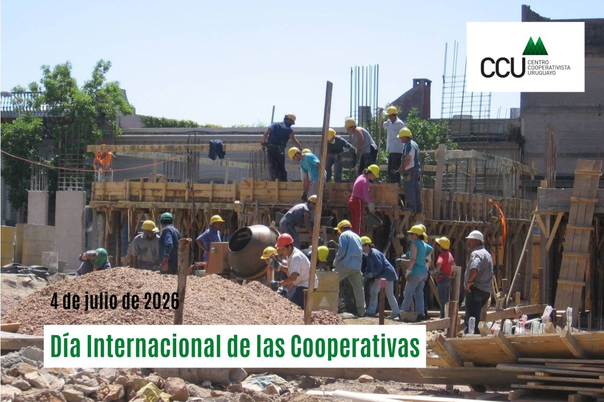
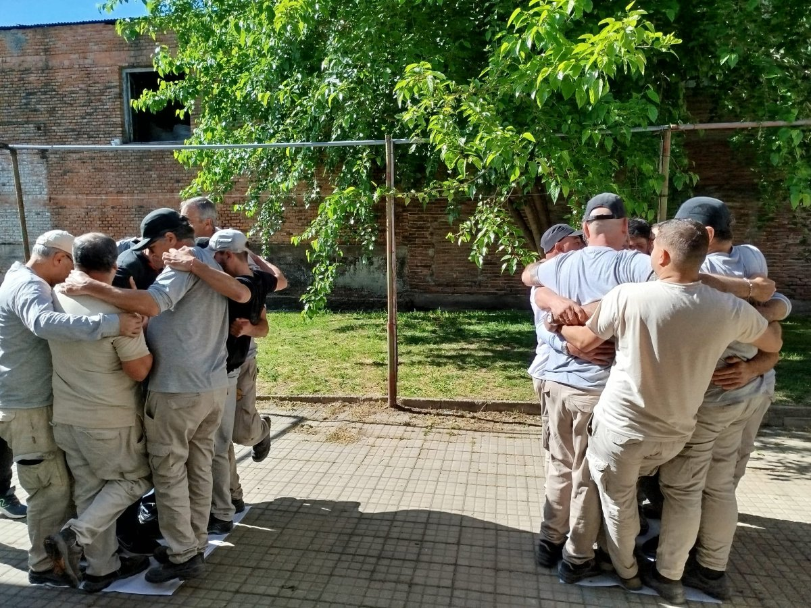
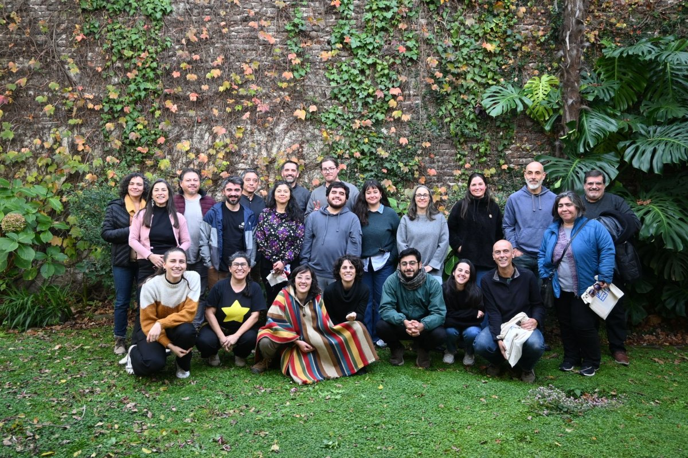

Avanza el realojo del asentamiento El Progreso
Continúa el trabajo con la comisión barrial y las familias del realojo.
10 de julio de 2026 · Área Hábitat
Participamos de un episodio de «CoopsAméricas en Movimiento» sobre cómo la vivienda cooperativa contribuye al acceso a vivienda digna y al desarrollo humano integral en América Latina y el Caribe.
El presidente de CCU, Arq. Horacio Pérez Zamora, junto a Iván Otero, presidente de la Junta de Directores de la Liga de Puerto Rico —ambos miembros del Comité Regional de Vivienda de Cooperativas de las Américas— reflexionaron, desde las experiencias de Uruguay y Puerto Rico, sobre el papel de las cooperativas de vivienda en la construcción de comunidad, la participación democrática, el sentido de pertenencia y mejores condiciones de vida.
La conversación abordó los desafíos del acceso a la vivienda, la importancia de contar con políticas públicas y financiamiento adecuado, y el valor del cooperativismo como modelo para fortalecer el tejido social y promover entornos más solidarios y sostenibles.

Continúa el trabajo con la comisión barrial y las familias del realojo.

Bajo el lema «Cooperativas por un mundo en paz».

Reforzamos vínculos con organizaciones de Chile.